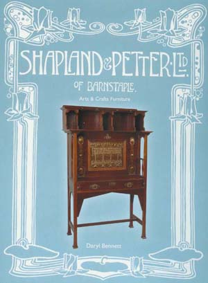

Shapland and Petter of Barnstaple: Arts and Crafts Furniture

The Arts and Crafts furniture of Shapland and Petter of Barnstaple is now the subject of an authoritative fully illustrated book on the company. The book, which was part of a larger project funded by the Heritage Lottery Fund has been published by the Museum of Barnstaple and North Devon.
The book was reviewed by Mark Eastment in the Decorative Arts Society Newsletter (April 2006) who says:
This groundbreaking book is the first to deal with the Arts and Crafts Furniture of Shapland and Petter in 1894 to 1914. Combining previously undocumented archive material ..this book provides an opportunity to review many assumptions made when dealing with furniture so often described as being in the Arts and Crafts Style, linked to Liberty's or the British Art Nouveau Movement. Over 200 illustrations, mainly in colour show the enormous variety of the work produced during this brief period illustrating a glorious use of fine inlays, cut outs and repoussé. The book is well written edited and designed and confirms yet another new area of possible scholarship (and collecting) to be explored
Summary of the book
Shapland and Petter furniture has become increasingly sought after by collectors and the prices of the best examples of decorated furniture have continued to increase in recent years as more is known about the company and their very distinctive style. However, whilst there is already a strong market for British collectors of Shapland and Petter, many pieces sold at auction have not been recognised or properly attributed to the company, most being assumed to be made by Liberty and Co or the Glasgow based retailer Wylie and Lochhead.
This book brings a wealth of new information about the designs and trade catalogues of the company at the turn of the century and this will certainly be welcomed by those interested in Art Nouveau and Arts and Crafts style in furniture and interior decoration. The author Daryl Bennett has undertaken extensive research in the company archives and the National Art Library working with the museum, and a team of volunteers who have helped to establish a digital database of the company. The book draws upon this information using period photographs and drawings to illustrate company style, picturing fine examples from contemporary collections of Shapland and Petter alongside their original designs.
The history of the company is explained within the broader story of 'artistic' furniture design and the development of the Arts and Crafts movement in the South West of England. Shapland and Petter were a major employer in North Devon from the mid Victorian period and continued making furniture and bespoke joinery through the twentieth century. The company still exists today as the joinery manufacturer Leader Flush Shapland. During their high period as an 'art furnisher' Shapland and Petter produced an enormous range of furniture in revival styles but also specialised in artistic furniture in the 'New Art' or Arts and Crafts style.
The classic Shapland and Petter style relies essentially on high quality construction, with characteristic geometric arches, squared spindles and heavily decorated in a variety of techniques which include inlaid work, repousse copper panels and stencilled work. The beauty of these pieces lies in the selection of wood; highly figured oak and fine mahogany and in the decoration of pieces which shows a wide range of handicrafts and artistic skills.
In many ways the company represented a bridge between a traditional Arts and Crafts workshop and a modern manufacturing cabinet maker, able to provide for a wide marketing and retailing sector. Commercially their use of technology and their marketing which included a shop in London's West end helped them to thrive but they also managed to retain the skills in design and in repousse work, enamelling, inlaid work and stained glass which give the unique character to each piece.
The book by Daryl Bennett is 132 page full colour with over 200 illustrations of furniture and company designs and will be of interest to collectors and an invaluable reference book for dealers and auction houses. An explanation of the registration numbers, company marks and distinctive characteristics is provided in order to enable greater confidence in recognition of pieces. This book is an invaluable guide for dealers, auction houses and collectors.
The book has been produced as a short run limited edition and is available cost 32.50 UKP including post to UK please email [email protected] to obtain a copy, and to check posting for USA and rest of the world.
Shapland and Petter illustrated talks
Since publication, the Shapland and Petter book has sold well with interest from Canada, USA and Australia. It was well reviewed by the Antiques Trade Gazette and by the Decorative Arts Society Newsletter, and has been welcomed by decorative arts and furniture specialists at Cheltenham and the V&A museums. It has also received acclaim from collectors, dealers, auctioneers with specialist interest in the decorative arts. The author, Daryl Bennett gave illustrated talks on Shapland and Petter to the Gulbenkian Judges, the Charles Rennie Macintosh Society in York, The Arts and Crafts Network in Cheltenham and the Victorian Society in Sheffield. Further engagements are planned for 2014 and any Society or study group wishing to arrange a talk by the author should contact him at [email protected]